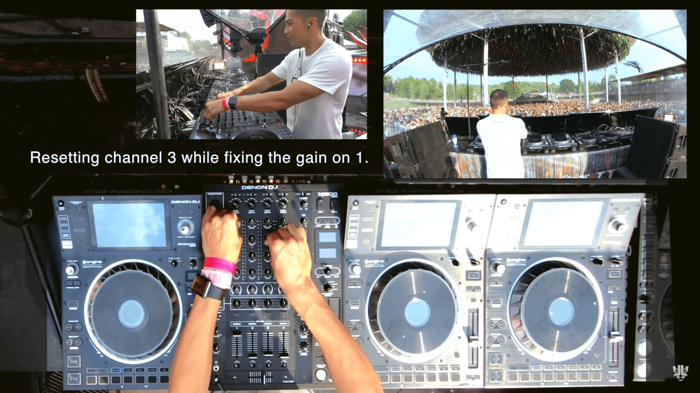
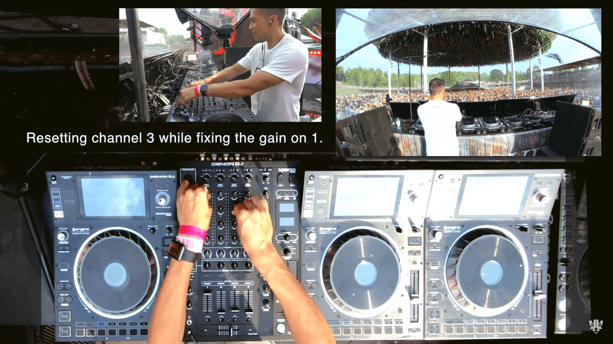

Luke is really passionate about the
art of DJing and he DJs live at every gig for about 25 years. Risk taking, reading the crowd and going out of his comfort zone is his norm! No pre-made setlists, just live mashups that make people dance!
Real DJing at Tomorrowland Mainstage 2019 ↓


 
